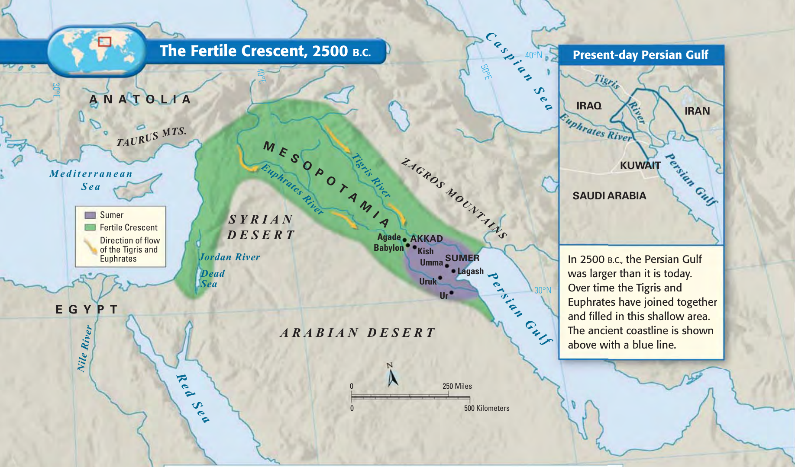
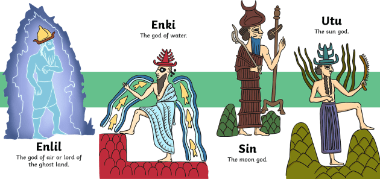
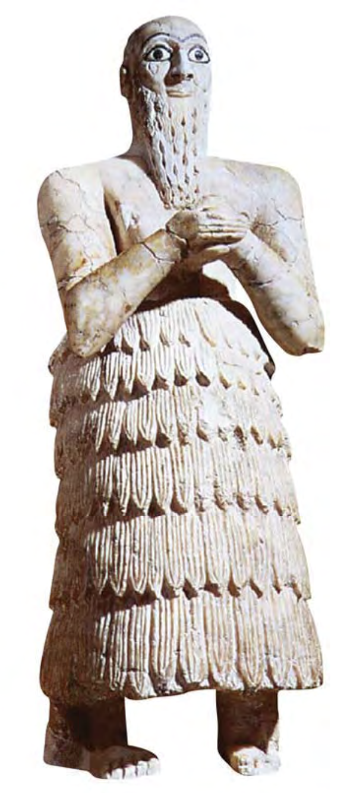
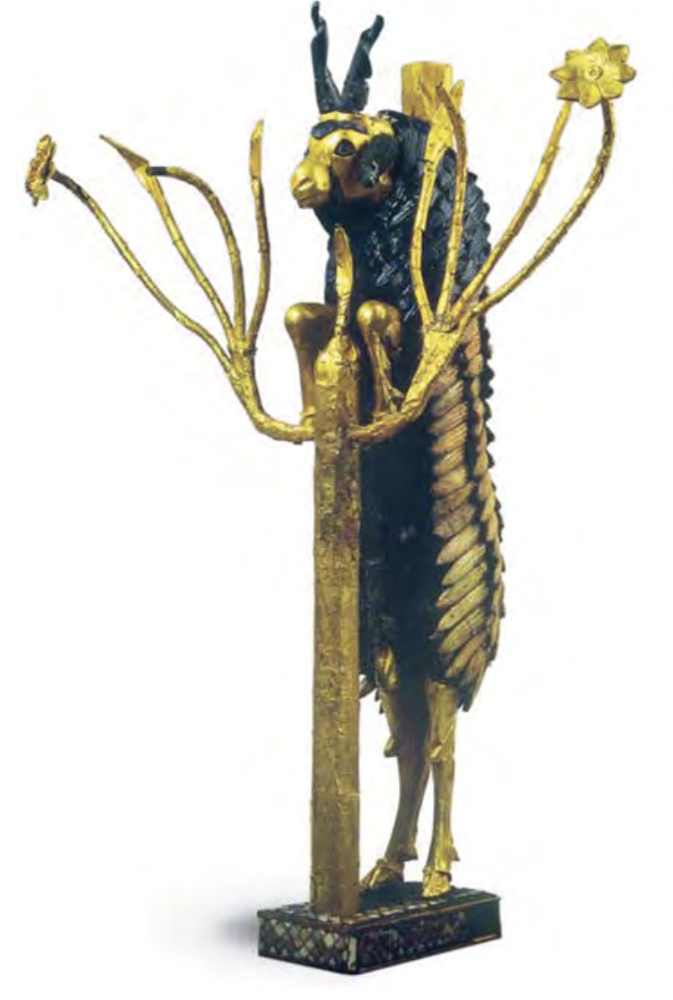
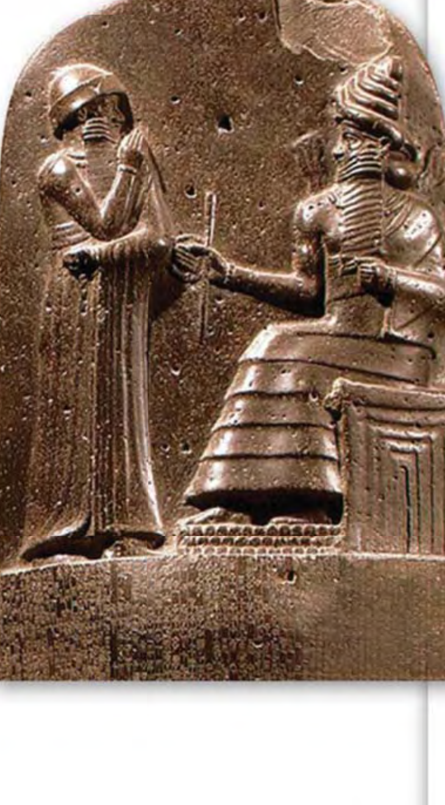

Mesopotamia = "The land between the rivers"
美索不达米亚在希腊语中意为“两条河流之间的土地”。
1. Tigris River (底格里斯河)
2. Euphrates River (幼发拉底河)
两河自西北山地向东南流淌，最终注入波斯湾 (Persian Gulf)。
A curved ribbon of rich farmland stretching from the Mediterranean Sea to the Persian Gulf.
自地中海东岸向东南弯曲延伸至波斯湾的新月形肥沃农耕区。



Today we look at the evidence: Did this rule apply equally to everyone in Babylon? (今天用史料检验：在古巴比伦，这项规则真的对所有人都一视同仁吗？)
